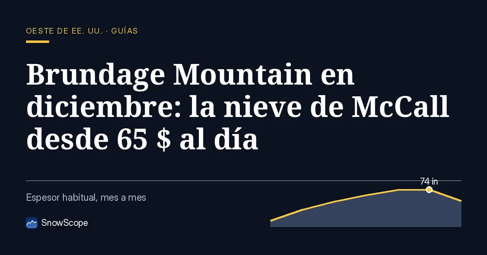
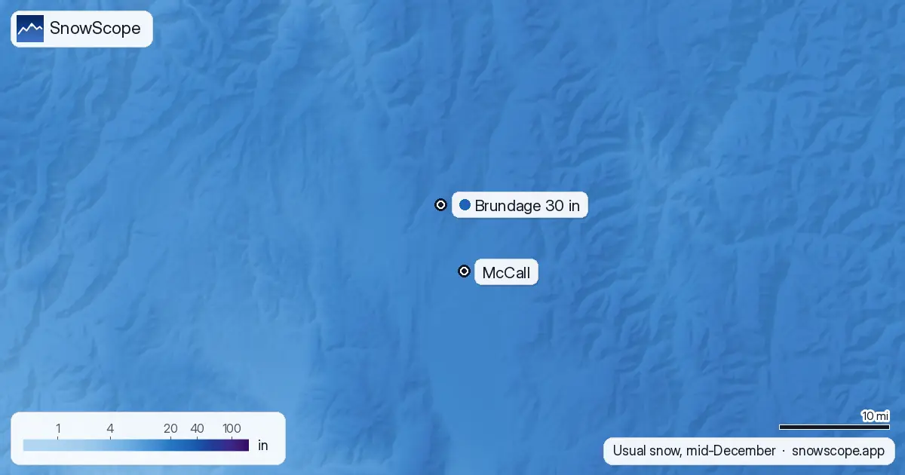

Brundage Mountain en diciembre: la nieve de McCall desde 65 $ al día
Brundage se alza sobre McCall, un tranquilo pueblo junto a un lago en el centro de Idaho, y ofrece uno de los antecedentes de nieve a principios de temporada más fiables de la región. Los forfaits salen desde 65 $ si reservas con antelación, lo que lo convierte en una opción asequible para esquiar en diciembre antes de que suban los precios navideños.
Consulta la previsión de nieve en tiempo real de Brundage Mountain en la app SnowScopeEspesor de nieve, alertas de nieve polvo y mapa 3D, gratis.
La montaña y el pueblo
Brundage se eleva al norte de Payette Lake, con 6 remontes y unos 49 km de pistas repartidas en 526 m de desnivel. La base está a 1,792 m, media montaña alrededor de 2,055 m, y la cima a 2,318 m. Es una estación pequeña, gestionada localmente, con un ambiente relajado y colas cortas en remonte entre semana.
McCall en sí es un pueblo de montaña con hoteles, restaurantes y tiendas. La carretera desde Boise sigue el cañón del río Payette —pintoresco pero sinuoso, así que dedica tiempo extra y lleva cadenas en invierno.

Cuándo llega y se asienta la nieve
La nieve duradera suele llegar a media montaña a mediados de octubre. Durante diciembre, la probabilidad de una profundidad de nieve esquiable (50 cm o más como media semanal) crece constantemente: el 67 % de inviernos pasados tienen buen manto la primera semana de diciembre, el 85 % en la segunda semana, el 93 % en la tercera, y el 96 % en la semana alrededor de Navidad.
En profundidad real, un 1 de diciembre típico tiene 55 cm a media montaña; el 15 de diciembre sube a 77 cm, y en Navidad alcanza 97 cm. En la base, las cifras son menores pero siguen siendo fiables: 43 cm el 1 de diciembre y 57 cm el 15 de diciembre, con el 65 % de inviernos pasados superando 50 cm a mediados de mes.

La tendencia: inicio de temporada más fino
La profundidad de nieve a principios de diciembre ha bajado ligeramente con el tiempo. En los 15 primeros inviernos de nuestro registro de 46 años (1980–81 a 1994–95), media montaña típicamente tenía 83 cm el 15 de diciembre. En los 15 inviernos más recientes (2011–12 a 2025–26), esa cifra bajó a 61 cm. El porcentaje de inviernos con buen manto bajó del 93 % al 80 %.
El invierno pasado (2025–26) subrayó este cambio: solo 47 cm había en media montaña el 15 de diciembre. Diciembre temprano es más fino ahora, así que la paciencia vale —espera hasta la segunda mitad del mes para una opción más segura.
Precios de forfaits y opciones de pase
Brundage usa precios dinámicos. Los forfaits diarios salen desde 65 $ en fechas seleccionadas pero suben conforme se acerca tu visita. El período pico de vacaciones corre del 19 de diciembre de 2026 al 3 de enero de 2027, cuando los precios se disparan.
Si planeas varias visitas, el Indy Pass ofrece valor: el Indy Base Pass cuesta 419 $ y te da dos días en cada una de 300+ estaciones miembro (con fechas bloqueadas); el Indy+ Pass es 469 $ y quita los bloqueos. Brundage es miembro.
Brundage, Schweitzer y Lookout Pass comparados
La región tiene otras dos opciones cercanas. Schweitzer Mountain, al noreste de Brundage, está más baja en general pero acumula nieve más profunda en elevaciones mayores: un 15 de diciembre típico trae 138 cm a media montaña. Ofrece un pase de 3 días por 249 $ (unos 83 $ por día). Lookout Pass, al sur en la frontera estatal, tiene nieve similar a media montaña que Brundage —75 cm en un 15 de diciembre típico— y vende forfaits entre semana a 63 $ si reservas con antelación.
La ventaja de Brundage es la consistencia a elevaciones bajas y flexibilidad en precios. Para un esquiador de base a media montaña que se queda entre semana en diciembre, ofrece buenas probabilidades de nieve y el precio de entrada más bajo entre los tres.
Cómo timing tu visita
Reserva forfaits con antelación: los precios de Brundage recompensan la planificación anticipada. La segunda semana de diciembre (a partir de alrededor del 7 de diciembre) tiene un 85 % de probabilidades de buena nieve y queda antes del aumento navideño. La tercera semana —del 14 al 20 de diciembre— ofrece cobertura aún mejor (93 %) mientras los precios siguen siendo más bajos que el período pico.
Si eres flexible, evita desde el 19 de diciembre en adelante. Si debes esquiar la semana de Navidad, espera precios más altos pero excelente profundidad de nieve: 97 cm a media montaña es típico el 25 de diciembre, y el 96 % de inviernos pasados superó 50 cm en esa fecha.
Consejos para esquiadores
- Compra tu forfait al menos dos o tres semanas antes para fijar el precio base de 65 $; el sistema dinámico de Brundage cobra más por reservas de último minuto.
- Apunta a la segunda o tercera semana de diciembre para la mejor combinación de profundidad de nieve y precios más bajos; salta el período pico del 19 de diciembre al 3 de enero si tus fechas son flexibles.
- A media montaña (2,055 m), tienes más probabilidades de encontrar nieve esquiable durante diciembre. La base es más fina; comprueba condiciones antes de conducir si planeas esquiar a principios de mes.
- La carretera del cañón del río Payette puede estar helada; dedica tiempo extra de viaje desde Boise y lleva o alquila cadenas, incluso si el pronóstico se ve despejado.
- Para condiciones de aludes actuales si planeas salir de las pistas marcadas, consulta el boletín oficial en avalanche.org.
Sobre estas cifras
Los espesores de nieve de las estaciones son la nieve más profunda en las pistas altas en la fecha indicada; son estimaciones para una zona, no una medida en un punto. Las previsiones pueden cambiar. Consulta siempre el boletín oficial de aludes antes de salir fuera de pista.
Boletines oficiales de aludes: avalanche.org (US national portal)
Citar este informe
Para investigación, docencia o prensa: cifras y gráficos reutilizables libremente bajo CC BY 4.0 con esta cita.
SnowScope (2026), Brundage Mountain en diciembre: la nieve de McCall desde 65 $ al día, https://snowscope.app/blog/es/2026/11/brundage-mountain-mccall-december-ski-budget.html, consultado el 2026-11-14
SnowScope (Atlas Labs). (2026, November 14). Brundage Mountain en diciembre: la nieve de McCall desde 65 $ al día. SnowScope snow reports. https://snowscope.app/blog/es/2026/11/brundage-mountain-mccall-december-ski-budget.html
BibTeX
@misc{snowscope2026brundagemountainmccallde,
author = {{SnowScope (Atlas Labs)}},
title = {Brundage Mountain en diciembre: la nieve de McCall desde 65 $ al día},
year = {2026},
month = nov,
howpublished = {\url{https://snowscope.app/blog/es/2026/11/brundage-mountain-mccall-december-ski-budget.html}},
note = {Published 2026-11-14 20:07 UTC; accessed 2026-11-14}
}· CC BY 4.0 · Métodos, datos y herramientas →
Brundage Mountain: nieve y temperatura según la altura, este invierno vs el pasado (herramientas) →
Sigue Brundage Mountain
Gratis: un aviso cuando llega la nieve y la previsión cada mañana.